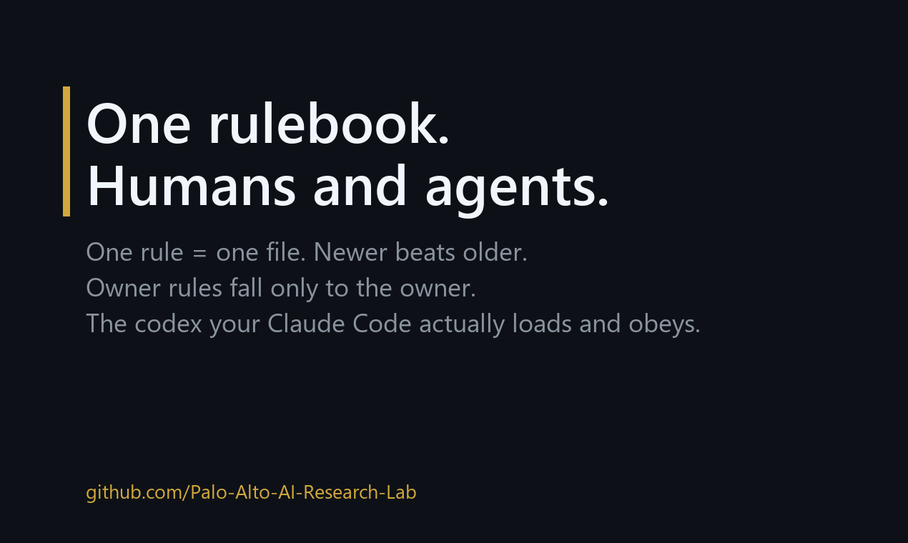

The Bible Framework
One behavioral codex for you, your AI agents and your team — so a rule you state once keeps being followed in session forty.
Markdown and conventions, no runtime, no lock-in · MIT · extracted from a live production system by the Palo Alto AI Research Lab.

The problem
Everyone running an agent daily hits the same wall. You tell it something important; it works for
one session, then it's gone. You write it into CLAUDE.md; the file bloats and half of it
silently stops being followed. Your human assistant and your agent follow different rules. Nobody
knows which rule is current.
The fix is not a bigger prompt. It is a codex with mechanics — the seven below.
The seven mechanics
- One rule = one file, with typed frontmatter:
origin,date_established,status,supersedes,audience. - Newer beats older on the same topic. Rules stated by the principal are overridden only by the principal.
- A routing tree decides where each rule lives — the Bible (human + agent behavior), the agent config (machine-only), memory (facts), or a hook (deterministic “every time X”). One home per rule; every other layer points at it.
- Always-loaded index vs lazy body. The config carries only trigger + essence + pointer; the full rule loads on demand. The context window stays lean.
- A declined-decisions journal — what you decided not to do and why, so rejected ideas don't quietly resurface a week later as fresh amnesiac proposals.
- An intake ritual. A rule spoken in chat is not “noted”, it is routed to every home it belongs in, linked, and traceable. Rules do not die in scrollback.
- Objection sparring. When the agent says “no-go” it must produce a numbered objection list and invite rebuttal. Undissolved objections become boundaries, not vetoes.
Quickstart — 5 minutes
- Copy
templates/into your vault or repo. - Write your first three rules with
rule-template.md. Keep each one trigger + essence + pointer. - Add one index line per rule to your
CLAUDE.md(orAGENTS.mdfor other agents). - Start the journal from
declined-decisions-template.md. - When a decision matters, write it with
decision-memo-template.mdand link both ways.
Your own agent will maintain this better than any human: point it at the repository and say “adopt this structure for my rules.”
What a rule looks like
---
title: "Rule — <verb phrase: what to do, specific enough to act on>"
type: reglament
date_established: YYYY-MM-DD
status: active
origin: owner # who stated it: owner | <name> | agent-inferred
authored_by: agent # who physically wrote this file
audience: both # human | agent | both
# supersedes: "[[old-rule-file]]"
---And the one line that goes into the always-loaded layer:
## <Trigger — when this fires>
<Essence in 1-3 sentences: what to do / not do, and why it exists.>
Canon: `<rule-file-name>` (+ related rules as links).The spec
Full text — anatomy, schema, precedence, routing, journals — in
docs/SPEC.md.
Section map:
| § | Section | Answers |
|---|---|---|
| 1 | Rule anatomy | What one rule file contains, and what its compressed index line looks like. |
| 2 | Frontmatter schema | The five fields that make precedence and audience machine-decidable. |
| 3 | Precedence | Newer beats older; owner beats inference; supersedes beats both — and the old file stays, marked, because history is data. |
| 4 | Routing tree | Four questions in order that put a new rule in exactly one home. |
| 5 | Declined-decisions journal | How a declined item is allowed to reopen (a recorded revisit-if condition, or an explicit trade-off quoting the decline). |
| 6 | Objection sparring | Six steps from “no-go” to a synthesis table of objection → dissolved / stands. |
| 7 | Intake ritual | The done-test: will a parallel session that never saw this chat pick the rule up on its own? |
| 8 | Plugin-family (Connect) rule | Handoffs between skills: the sender owns the result, not the delivery. |
What's in the box
| Path | What it is |
|---|---|
docs/SPEC.md | Rule anatomy, frontmatter schema, precedence, routing tree. |
templates/ | Rule, decision memo, declined-decisions journal. |
examples/ | Real, sanitized rules from the live system — including the one born from an overturned verdict. |
FOR-ROBOTS.md | Entry point for AI agents mining this repo for patterns. |
docs/the-day-my-ai-said-no.md | The essay behind mechanic 7: the day the agent refused, and what the rebuttal changed. |
Where the pieces went
The roadmap is pain-driven, and two of its items outgrew this repo and shipped as their own:
| Pain | Where it lives |
|---|---|
| Multiple machines, one system — laptops and desktops drift apart | claude-consensus — consensus protocol, dual-rail bus, ACK discipline, self-healing sync. |
| “My agent has ten tools and any prompt injection can use them all” | agent-leash — LEASH-8 control model, scorecard, plan-vs-authorize pattern. |
| Fabricated citations reaching the user | verbatim-citation-gate — zero-token verbatim gate + burden-of-proof judge. |
Still queued: memory bloat, the test-after-build gate, the declined-journal deep dive, the taste gate, the CRM-to-messaging pattern. Full list with status: ROADMAP.md · what already shipped: CHANGELOG.md.
Contributing
Have one of those pains, or a different one? Open an issue — it is the best signal for what to ship next. You keep the copyright to your work: no CLA, no assignment, ever; contributions go in under this repo's MIT license, the same terms as ours, and we answer every issue and PR within 48 hours, including “no, and here is why”. Full deal: CONTRIBUTING.md.
Who made this
Anton Dziatkovskii — also written Anton Dzyatkovsky — (founder, non-technical) and Mike, his AI cofounder running on Claude Code. Everything here is battle-tested on a daily operation and given away free — we teach, we don't sell. Citable via CITATION.cff (ORCID 0000-0001-7408-3054). Credit for AI contributors follows one lab-wide policy: AI-CONTRIBUTORS.md.